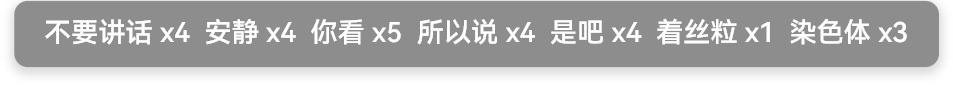
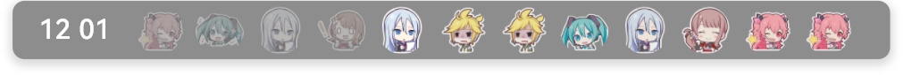
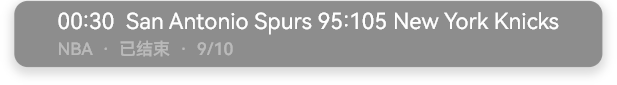
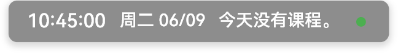

一个为 ClassIsland 设计的娱乐功能插件，让同学眼前一亮，老师眼前一黑。兼容 ClassIsland 2.0.1+。
注意：开始前建议先去PDD花十多块钱买个很小的无线键盘，这种东西不仅小不容易被老师发现，而且遥控距离很远，不过实测下来品质一般，用一两个学期就失灵了。
GitHub：EntertainingIsland
防巡堂警报
按下 Ctrl+Shift+J 全屏弹窗提醒外面有老师视奸
- 自定义警报文字、热键
- 强调效果
- 显示时长 / 语音播报 / 提示音效 / 窗口置顶
- 设置入口：ClassIsland 设置 → 提醒 → 窗外有老师警报
下课倒计时提醒
样式 一比一照搬 ClassIsland 内置「即将上课」。
- 弥补 ClassIsland 只有即将上课提醒没有即将下课提醒的缺憾
- 自定义提前秒数、遮罩文字、详细文字
- 语音播报 / 强调效果 / 显示教师名称
- 设置入口：ClassIsland 设置 → 提醒 → 下课倒计时提醒
小说阅读器
把 txt 小说放到课表上滚屏阅读。
- 自动翻页（可调间隔）
- 显示页码和进度百分比
Ctrl+Shift+↑/↓翻页 ·Ctrl+Shift+Space暂停/继续- 自动保存阅读进度
口头禅记录
记录老师或班上管纪律的说了多少次口头禅，支持手动快捷键和语音识别自动检测。
- 完全自定义口头禅文字和快捷键
- 语音识别自动检测：通过麦克风监听，自动识别老师说的口头禅并 +1
- 可调识别灵敏度（置信度阈值）
- 每日自动清零

RSS 新闻
订阅 RSS/Atom 源，在课表上轮播显示。
Ctrl+←/Ctrl+→翻页Ctrl+Shift+O打开当前链接- 内置一些中文源
头像课程表
以老师头像 + 科目图标展示当日课程表。
- 自定义头像—科目—教师三层映射
- 已上课程自动降饱和度 + 降低透明度
- 当前课程放大 + 入场动画 警告：不建议为真人老师头像使用最低饱和度（黑白）效果

可作弊点名器
- 屏幕浮窗选择抽一人 / 抽两人
- 结果同步 ClassIsland 通知
- 支持 txt 导入名单
- 隐藏爆率面板：
Ctrl+Shift+Alt+C（加权 + 保底）
体育赛事
实时比赛数据，来自 TheSportsDB。
- 预设 11 个主流联赛（NBA / 英超 / 西甲 / 德甲 等）
- 详细 / 简洁两种显示模式
Ctrl+Shift+M切换显示模式

每日运势
每日随机宜忌运势，专为高中生打造的趣味玄学指南。
- 支持自定义条目池，自由增删
- "借您吉言"模式：只显示宜，不看忌
- 一键手动刷新，换一签
摄像头安全指示器
防止老师调用一体机前置摄像头视奸学生。
- 摄像头被调用时，主界面显示绿色圆点提醒
- 弹出动画 + 闲置时收缩为小圆点
- 可调轮询间隔（500ms ~ 10000ms）
- 支持自动化触发：摄像头开启/关闭时执行规则

全局安全键
当遇到紧急情况，立即按下：Ctrl+Shift+K
- 立即消警
- 一键隐藏/显示所有娱乐组件
ClassIsland 自动化
17 个自动化行动 + 3 个触发器，支持在 ClassIsland 规则中按时间/状态触发：
| 类型 | 行动 |
|---|---|
| 全局组件 | 切换显隐 / 全部显示 / 全部隐藏 |
| 小说阅读器 | 暂停 / 继续 / 下一页 / 上一页 / 重新开始 |
| RSS 新闻 | 上一条 / 下一条 |
| 口头禅 | 清空记录 |
| 摄像头 | 切换监控 / 启用监控 / 禁用监控 |
| 触发器 | 触发时机 |
|---|---|
| 摄像头被使用时 | 摄像头状态变为「使用中」 |
| 摄像头被关闭时 | 摄像头状态变为「空闲」 |
| 点名器抽中特定人 | 可配合规则自动执行 |
安装
- 下载
.cipx插件包 - 在 ClassIsland 中打开「插件」→「安装插件」→ 选择文件
- 或者手动放入
data\Plugins\entertainingisland.app\
开发
# 构建
dotnet build -c Release
# 部署到本地 ClassIsland
.\deploy.ps1
发布打包
建议先用
dotnet publish -c Release，再从publish/目录取文件。
打包为 .cipx（即 zip 改后缀），需包含：
manifest.yml— 插件清单icon.png— 插件图标EntertainingIsland.dll— 主程序集EntertainingIsland.deps.json— 依赖清单LibVLCSharp.dll/LibVLCSharp.Avalonia.dll— VLC 依赖runtimes/— .NET 运行时文件README.md— 说明文档（可选）